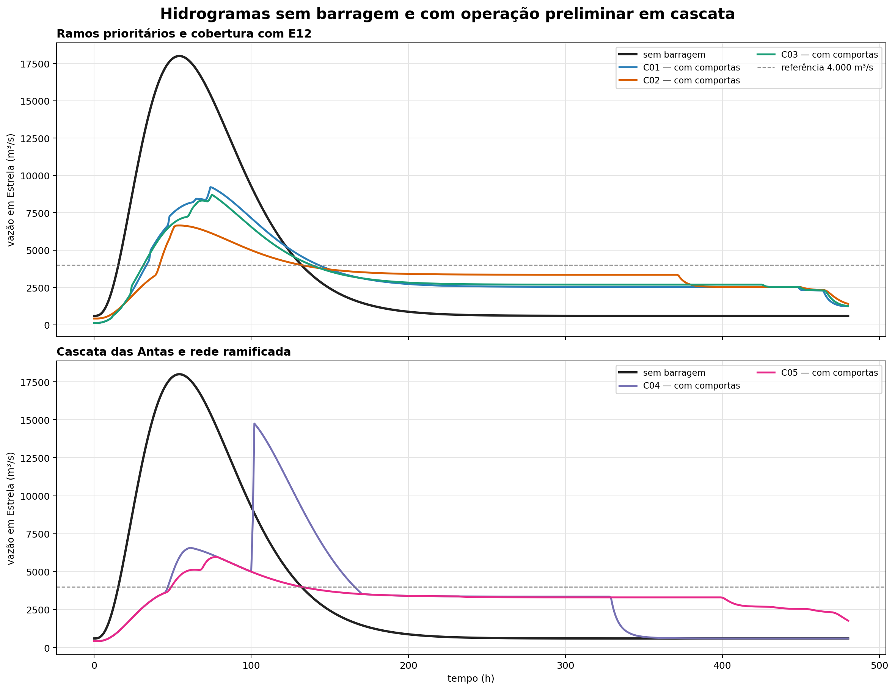
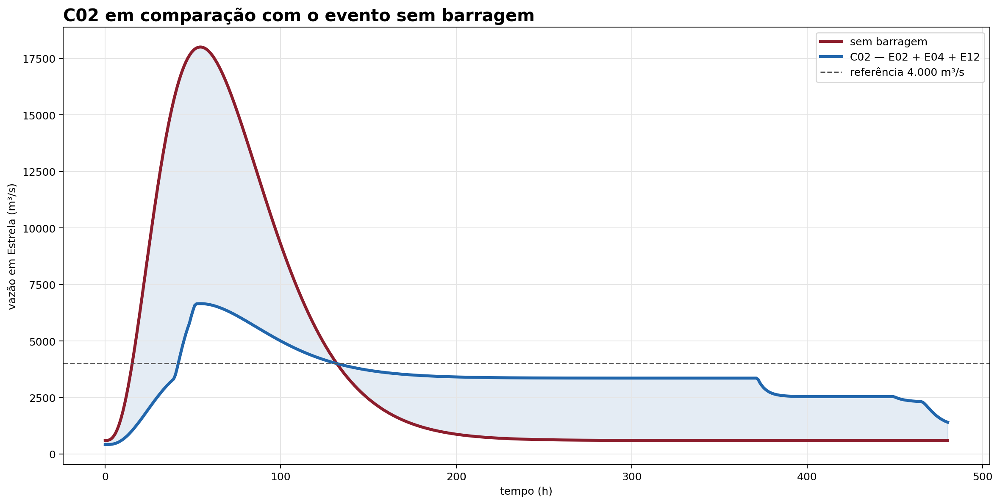
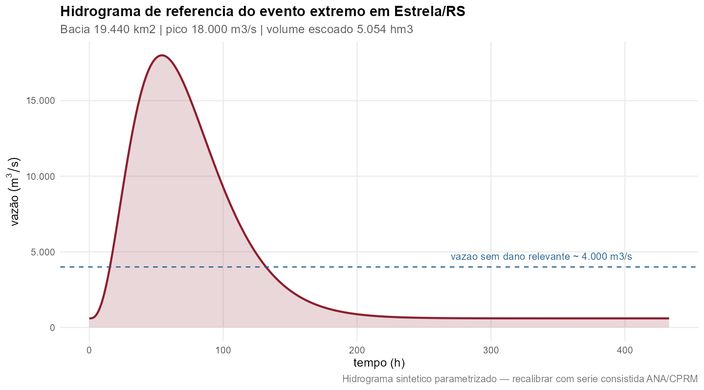
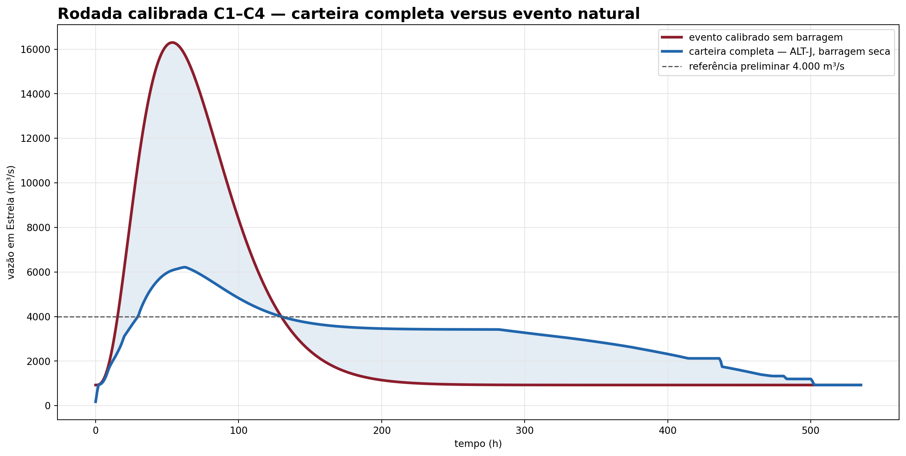

4 Hidrologia e HAND
4.1 Delimitação e vazões
O delineamento de montante foi realizado sobre o D8 e conferido contra áreas da BHO/ANA. Para BAR-A, a área controlada foi aproximadamente 15.760 km², com aderência inferior a 1% ao controle ottocodificado. A consistência espacial é suficiente para uma triagem, mas não substitui a calibração hidrológica.
O valor calibrado de referência para a vazão específica é 0,0269 m³/s/km². O número deve ser substituído por parâmetros derivados de séries observadas e por uma transformação chuva–vazão calibrada para o evento de 2024 e para eventos de projeto.
4.2 Cadeia de cálculo hidrológico
O cálculo preliminar foi organizado em uma sequência simples e auditável:
- delimitar a área incremental de cada eixo pela grade D8 e conferir a área contra a BHO;
- estimar a afluência com a vazão específica, mantendo o fator explícito;
- construir um hidrograma sintético com forma gamma para representar o evento de referência;
- separar os hidrogramas dos ramos antes de combiná-los, para preservar a defasagem;
- aplicar a continuidade em cada reservatório,
S(t+Δt) = S(t) + [I(t) − O(t)]Δt; - limitar o armazenamento pela CAV e registrar saturação, galgamento e volume de espera;
- transferir o hidrograma resultante ao ponto de Estrela e, na etapa seguinte, ao HEC-RAS 1D.
O volume de espera requerido é calculado, para uma vazão-alvo preliminar, por
V_req = ∫ max[0, Q_afluente(t) − Q_alvo] dt.
O valor é convertido para hm³ dividindo o volume em m³ por 10⁶. A escolha de Q_alvo, a duração do evento e a sincronização entre ramos são parâmetros sensíveis; por isso, o resultado não pode ser transformado diretamente em volume de uma obra.
4.3 Volume requerido, volume alocado e cota de cada reservatório
É importante separar dois cálculos que têm finalidades diferentes:
- Volume requerido em Estrela:
V_req = ∫ max[0, Q_Estrela(t) − Q_alvo] dt. Esse é o volume que, em uma hipótese ideal de controle total e sincronização perfeita, precisaria ser retirado do hidrograma na seção de controle de Estrela para não superar a vazão-alvo. - Volume de espera nominal da alternativa: para cada eixo
i, a rodada SINV adota uma altura admissívelH_ie uma fração de esperaf_esp = 50%. O volume é calculado pela CAV individual:V_espera,i = f_esp × V_max,i(H_i). O volume da alternativa é a soma desses volumes, sem afirmar que ele será utilizado integralmente no mesmo instante.
Portanto, na rodada atual o volume requerido não é distribuído entre os reservatórios por uma otimização e não é usado para resolver automaticamente a cota de cada barragem. As cotas são obtidas individualmente invertendo a CAV de cada eixo:
NA_mxn,i = cota_eixo,i + CAV_i⁻¹[V_max,i(H_i) − V_espera,i].
Isso produz o nível de espera/nível máximo normalizado da simulação energética. A cota depende da CAV daquele reservatório, de sua altura admissível e da fração de espera; não existe uma única cota comum para toda a alternativa.
Exemplo da alocação nominal usada nas alternativas principais:
| Eixo | Altura admissível (m) | Volume máximo (hm³) | Volume de espera (hm³) | Cota NA_mxn (m) |
|---|---|---|---|---|
| E02 — ALT-A | 120,0 | 1.377,4 | 688,7 | 385,8 |
| E04 — ALT-A | 120,0 | 2.210,7 | 1.105,3 | 326,9 |
| E08 — ALT-D | 86,0 | 620,4 | 310,2 | 209,8 |
| E12 — ALT-E/C02 | 55,5 | 976,5 | 488,2 | 86,8 |
Assim, ALT-A soma 1.794 hm³ nominais, ALT-D soma 2.104 hm³ e ALT-E/C02 soma 2.282 hm³. Esses valores não devem ser comparados diretamente com V_req como se fossem equivalentes: o primeiro é uma capacidade inicial distribuída conforme CAVs; o segundo é uma integral do excesso de vazão em Estrela. O roteamento é que deve mostrar quanto do volume é efetivamente utilizado, em que momento, em qual reservatório, e qual pico resulta a jusante.
4.3.1 Onde está a vazão-alvo
Na formulação atual, Q_alvo = 4.000 m³/s é uma vazão-alvo preliminar na seção de controle de Estrela, associada à hipótese de vazão abaixo da qual não haveria dano relevante. Ela não é uma vazão medida na entrada de cada reservatório nem uma vazão definida a montante de Estrela. O valor de 4.000 m³/s é um placeholder e deve ser recalibrado a partir das cotas de inundação, curvas-chave, danos observados e do HEC-RAS 1D.
No roteamento simplificado das comportas, essa meta de Estrela foi convertida em metas locais proporcionais à área contribuinte: Q_alvo,i = 4.000 × A_i / 19.440. Essa regra é apenas uma aproximação de triagem para repartir a meta entre os eixos; ela não representa uma condição hidráulica local observada. Na modelagem contratada, as descargas de cada reservatório deverão ser escolhidas pelo hidrograma incremental, tempo de viagem, afluências laterais e nível na seção de controle em Estrela.
4.4 Hidrogramas com e sem reservatórios
As figuras abaixo mostram a diferença entre o evento sem reservatório e a triagem com operação coordenada de comportas. C01 é composto por E02 + E04, C03 por E02 + E04 + E08 e C02 por E02 + E04 + E12. No HEC-RAS 1D, eles serão comparados nessa ordem, depois do HEC-00 sem obra; C02 não é uma alternativa escolhida, mas o terceiro caso da sequência mínima. Todos dependem de CAVs, remanso e regras operacionais verificadas.



Na triagem, os picos resultantes foram 9.217 m³/s para C01, 6.650 m³/s para C02, 8.713 m³/s para C03, 14.753 m³/s para C04 e 5.965 m³/s para C05. C04 saturou os quatro reservatórios considerados; C05 apresentou um reservatório saturado e um galgamento. Esses números são de roteamento preliminar, não de simulação hidráulica calibrada.
4.5 Rodada calibrada C1–C4
O Claude executou uma segunda rodada com séries obtidas da ANA, máximas anuais de Muçum e parâmetros recalibrados. O pico sintético de referência passou de 18.000 para 16.300 m³/s no ponto de análise, a lâmina escoada passou de 260 para 227 mm e a vazão de base passou de 600 para 926 m³/s. O posto de Estrela possui somente 3,1 anos de vazão; por isso, a transposição e a curva-chave ainda exigem confirmação com as medições previstas no TR.
O ajuste de Gumbel por momentos-L em Muçum indica que o pico de setembro de 2023 corresponde a aproximadamente 333 anos. Maio de 2024 teve menor pico, mas maior volume escoado; o relatório passa a tratar as duas cheias como eventos distintos, sem chamar automaticamente uma delas de “evento de 100 anos”.
Com a regra de barragem seca e os parâmetros calibrados, o roteamento das alternativas produziu:
| Alternativa | Eixos | Volume efetivamente usado (hm³) | Pico em Estrela (m³/s) | Redução |
|---|---|---|---|---|
| ALT-A | E02 + E04 | 1.694 | 9.272 | 43,1% |
| ALT-D | E02 + E04 + E08 | 1.871 | 8.411 | 48,4% |
| ALT-E | E02 + E04 + E12 | 2.366 | 6.328 | 61,2% |
| ALT-J — carteira completa | E02 + E04 + E01 + E05 + E08 + E12 | 2.639 | 6.213 | 61,9% |
| E12 isolado | E12 | 976 | 16.267 | 0,2% |
Nenhuma das 30 combinações testadas chegou a 4.000 m³/s. A comparação mostra por que o E12 não deve ser avaliado apenas pela área controlada: isolado, ele satura antes do pico e reduz praticamente nada; combinado com E02 e E04, passa a operar depois do amortecimento a montante. As regras convencionais de soleira livre produziram redução máxima de apenas 2,8%, contra 61,9% na melhor configuração de barragem seca.

Os valores calibrados substituem a rodada sintética como referência para a próxima análise, mas continuam sendo uma simulação de triagem: a decomposição ainda é proporcional à área e o limiar de 4.000 m³/s permanece provisório. A rodada específica do Forqueta foi posteriormente recalculada com a série observada do posto 86745000.
4.6 Eixos de retenção no Forqueta
Para avaliar a contribuição lateral, foram propostos dois pontos no Forqueta, cuja área contribuinte representa cerca de 14,63% da bacia da seção de Estrela. O FQ1, no segmento inferior, controla aproximadamente 2.354 km² (82,7% do tributário); o FQ2, em posição intermediária, controla aproximadamente 2.227 km² (78,3%).
O Forqueta, contudo, deságua a jusante do ponto de análise de 19.440 km². Portanto, os eixos FQ1/FQ2 são invisíveis no hidrograma desse ponto e só podem ser avaliados nos controles de Lajeado/Estrela, com uma afluência lateral inserida no modelo hidráulico.
O pipeline isolado confirmou aderência espacial entre D8 e BHO de 0,9985 para FQ1 e 0,9899 para FQ2. A CAV preliminar indica, a 80 m de altura geométrica, cerca de 2.424 hm³ em FQ1 e 1.289 hm³ em FQ2. O resultado é uma indicação de escala, não uma altura admissível: faltam topografia de maior resolução, geologia, ocupação, remanso, segurança, licenciamento e regra operativa.
O roteamento calibrado usou a série observada do Passo do Coimbra (86745000), com pico transposto de 3.837 m³/s. Em 13 eventos pareados, a defasagem central até Estrela foi 0 dia. Com esse parâmetro, ALT-J reduziu o pico em Estrela em 58,6%, ALT-J+FQ1 em 59,3% e ALT-J+FQ2 em 59,7%. O ganho marginal é pequeno e FQ1/FQ2 são mutuamente exclusivos por interferência de cota: o NA preliminar de FQ1 a 30 m fica 12,5 m acima do eixo FQ2.
A evidência ainda não fecha o caso: o Passo do Coimbra tem lacuna em novembro de 2023, quando Estrela registrou 17.261 m³/s e Muçum já estava em queda. O próximo dado crítico é uma série subdiária ou curva-chave reativada em Barra do Fão. Até lá, FQ1 e FQ2 permanecem opções condicionadas, fora da alternativa de referência.
Essa é uma exclusão da referência, não um descarte do tributário: por confluir antes de Estrela, o Forqueta continua sendo uma afluência lateral potencialmente relevante no HEC-RAS 1D para Lajeado, Estrela e Bom Retiro do Sul.
Na matriz ampliada com ALT-A–ALT-J, a melhor combinação preliminar foi ALT-J + FQ2 com barragem seca: pico de aproximadamente 6.802 m³/s em Estrela, redução de 59,8% e ainda 2.802 m³/s acima do limiar provisório de 4.000 m³/s. Com comportas, o melhor arranjo foi ALT-J + FQ1, com 7.887 m³/s. Assim, o Forqueta deve seguir na modelagem como alternativa lateral, mas os resultados atuais não indicam uma condição próxima da não ocorrência de cheia. A matriz completa está no resultado combinado.
4.7 Busca ampliada de barragens
Foi realizada uma busca exaustiva das adições possíveis à ALT-J. As 32 carteiras com E10 excluído, o envelope teórico de 64 carteiras incluindo E10 e as 192 combinações com FQ1/FQ2 não produziram nenhum pico inferior a 4.000 m³/s. O melhor resultado continua sendo ALT-J + FQ2, sob regra de barragem seca, com aproximadamente 6.802 m³/s em Estrela.
Essa repetição do pico para as adições E03, E06, E07, E09 e E11 decorre da topologia aninhada da rodada: com E12 presente, os eixos adicionais não ampliam a área terminal controlada no modelo simplificado. Isso não elimina seu interesse hidráulico local, mas impede apresentá-los como uma solução adicional de redução no exutório sem reformular a operação, os tempos de viagem e o modelo 1D. O E10 foi mantido apenas como envelope teórico, pois seu balanço energético preliminar é negativo.
O Guaporé deve ser tratado como a próxima hipótese estrutural. Como ele não possui um eixo dedicado na carteira E01–E12, sua contribuição precisa ser desagregada do hidrograma do Antas antes de ser roteada pelo GU1; somá-la diretamente ao hidrograma atual seria dupla contagem. Os resultados e tabelas da busca estão na síntese das carteiras ampliadas.
Na primeira decomposição numérica, o GU1 controlou 1.993,7 km² dos 2.486,7 km² do Guaporé. Com ALT-J e o máximo histórico do Santa Lúcia, a altura de 100 m reduziu o pico estimado em Estrela para 4.532 m³/s; o envelope de 120 m não trouxe redução adicional relevante. No cenário de novembro de 2023, com vazão observada menor no Guaporé, o resultado a 120 m e defasagem zero foi 4.763 m³/s. Em 384 combinações de evento, defasagem, altura, operação, ALT-J e FQ2, nenhuma ficou abaixo de 4.000 m³/s. Essa rodada confirma que GU1 merece prioridade, mas ainda não substitui a modelagem hidráulica nem autoriza a altura testada.


4.8 Uso do HAND
O HAND organiza a diferença de cota entre o terreno e a drenagem mais próxima. No estudo, ele cumpre três funções:
- indicar setores potencialmente conectados ao rio;
- orientar a seleção de seções e pontos de controle;
- comunicar a triagem altimétrica de forma intuitiva.
O método não calcula a onda de cheia por si só. A cota HAND não deve ser convertida diretamente em profundidade de inundação quando há pontes, diques, remanso ou armazenamento fora do talvegue.
4.9 O que foi calculado e o que não foi
Foi calculada uma triagem espacial de áreas baixas, bacias contribuintes, volume de espera e resposta temporal de reservatórios idealizados. Ainda não foi calculada uma mancha de inundação final com níveis observados, perdas de carga em pontes, remanso de jusante e seções topobatimétricas. Essa distinção é essencial: HAND filtra e explica; o HEC-RAS 1D transforma vazão em cota, profundidade e duração.
4.10 Preparação para o HEC-RAS 1D
Depois da triagem, o eixo principal deve ser modelado em HEC-RAS 1D com seções transversais, pontes, confluências, rugosidades, condições de contorno e estruturas de controle. A preparação preliminar já está descrita no capítulo de HEC-RAS 1D. A ordem operacional está fixada em HEC-00 sem obra → HEC-01 (E02 + E04) → HEC-02 (E02 + E04 + E08) → HEC-03 (E02 + E04 + E12). Somente depois entram HEC-04 (ALT-J + GU1), HEC-05 (ALT-J + FQ2) e as sensibilidades de rede. O diagrama topológico mostra quais entradas são estruturas do rio principal e quais são afluências laterais.
{kind=link}
4.11 Gerador estocástico de séries — uso complementar
Foi avaliada a aplicação do gerador Kirsch–Nowak, disponível no material local Ajumar/Kirsch-Nowak_Streamflow_Generator-master. O método gera séries diárias multissítio correlacionadas: primeiro cria totais mensais por transformação logarítmica, normalização e Cholesky; depois desagrega cada mês para a escala diária por vizinhos históricos e reescalonamento proporcional. A avaliação técnica detalhada registra a adaptação proposta para Antas, Forqueta e Guaporé.
O gerador é útil para construir um ensemble longo e estudar frequência de excedência, coincidência de picos, volume, duração, confiabilidade do volume de espera e distribuição de energia/danos. Ele não substitui a calibração do evento de referência: a versão principal assume estacionariedade, produz dados diários e não representa diretamente comportas, remanso, pontes ou a hidrodinâmica do HEC-RAS 1D.
No EUROCLIMA, ele deve ser usado como módulo probabilístico posterior à auditoria das séries e anterior à seleção dos casos do HEC-RAS. Os postos devem representar componentes hidrológicos compatíveis com a topologia, e não ser somados como bacias independentes quando forem aninhados. A primeira rodada recomendada é de diagnóstico estatístico; só depois os eventos sintéticos devem alimentar o roteamento CAV/comportas.
4.12 Limitações da rodada hidrológica
- hidrogramas sintéticos ainda não substituem a modelagem hidráulica calibrada;
- a defasagem central medida do Forqueta é 0 dia, mas não cobre o evento de novembro de 2023;
- Forqueta representa aproximadamente 14,63% da bacia de Estrela e deve entrar como contribuição lateral concentrada, não como vazão no ponto de 19.440 km²;
- FQ1 e FQ2 são alternativas mutuamente exclusivas e não integram a referência;
- o Guaporé, a montante do ponto de análise, ainda precisa ser investigado;
- o trecho final possui declividade estimada muito baixa, podendo ser controlado por remanso;
- não se deve somar hidrogramas gama independentes como se fossem uma única série sem sincronização física.
O conceito HAND e sua aplicação em estudos de inundação devem ser apresentados com a referência técnica indicada em Referências, sempre deixando claro que esta etapa é uma triagem anterior ao modelo hidráulico.